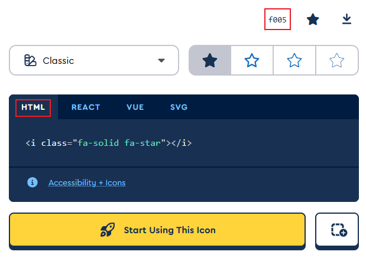

<link rel="stylesheet" href="https://cdnjs.cloudflare.com/ajax/libs/font-awesome/7.0.1/css/all.min.css" />
<i class="fa fa-home"></i>
<i class="fa-solid fa-home"></i>
免费的图标比较重，有点丑。。。
避免使用 fa 前缀：这是 v4 时代的遗留写法，在 v7 中虽能运行，但可能被未来版本废弃
多个家族系列：Classic、Sharp 和 Brands。。。
多个样式：Solid, Regular, Light。。。
fa-family fa-style fa-icon-name
<i class="fa-classic fa-solid fa-home"></i>
// Brands 家族只有这一个样式 brands：写法也是最直接，同时指明了家族和样式 <i class="fa-brands fa-github"></i>
如果只需要使用静态图标，仅仅引入 CSS 样式文件即可
如果需要使用动画，还需要额外引入 js 文件
<i class="fa-brands fa-servicestack"></i>
<i class="fa-brands fa-servicestack fa-beat"></i>
<i class="fa-brands fa-servicestack" style="color: #e71352;"></i>
<i class="fa-brands fa-servicestack fa-flip-horizontal"></i>
<i class="fa-brands fa-servicestack fa-xl"></i>
.tmp::before {
content: '\f005';
font-family: fontawesome;
color: #de5096;
}
<link href="/your-path-to-fontawesome/css/fontawesome.css" rel="stylesheet"> <link href="/your-path-to-fontawesome/css/brands.css" rel="stylesheet"> <link href="/your-path-to-fontawesome/css/solid.css" rel="stylesheet">

npm install font-awesome --save
import 'font-awesome/css/font-awesome.min.css'
<i class="fa fa-paper-plane"></i>